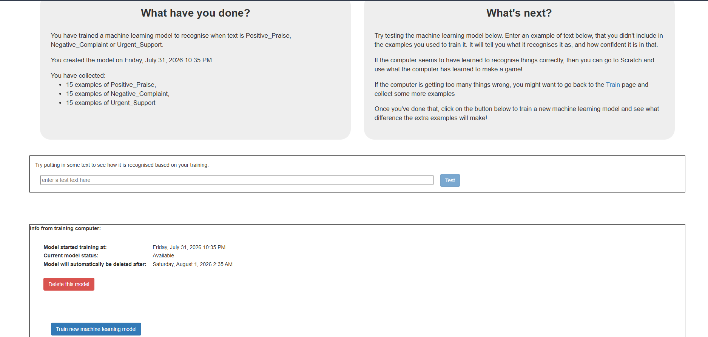

Every artifact below was produced by me for ITC-C508 between 24 July and 14 August 2026. Each one is captioned with its title, author, and date, can be read directly on this page, and can also be opened or downloaded in its original format.
The Prelim work follows one continuous thread. In Exercise PT-P1 I trained a three-class airline sentiment classifier using a no-code platform and tested how it behaved on clear, ambiguous, and out-of-vocabulary language. In Exercise PT-P2 I rebuilt that same classifier as an explicit feedforward neural network in Keras and ran twenty controlled experiments to try to beat the no-code benchmark. Exercise WW-P2 supplied the natural language processing theory underneath both, completed through a Microsoft Learn module and its accompanying text analytics activities.
Read together, these artifacts show a progression from using a tool to understanding what the tool was doing, and then to measuring the limits of that understanding.
Seven artifacts are published on this page. Select any item to jump directly to it.
Rebuilding the PT-P1 classifier as an explicit Keras feedforward network, then tuning it across twenty experiments covering architecture, optimization, regularisation, and dataset size.
This report is the central artifact of my Prelim output. It documents the full investigation: the architecture I built, the twenty experiments I ran, the loss curves I used to diagnose underfitting and overfitting, and the conclusion I reached about validation-based model selection on a small dataset.
It matters because it records a result I did not expect. Five different configurations tied at a validation weighted F1-score between 0.9051 and 0.9076, yet their test F1-scores ranged from 0.5281 to 0.8296. Writing the report forced me to explain that gap honestly rather than simply reporting the best number I had produced.
This is the code that produced every experiment in the report. The notebook implements the complete pipeline: loading the dataset, building a vocabulary, configuring hyperparameters, assembling an Embedding–GlobalAveragePooling1D–Dense–Dropout–Dense model, compiling it with Adam or SGD, training it, evaluating it on validation and held-out test data, and plotting the loss curves.
Every code cell is preceded by a markdown cell explaining what it does and why. I wrote those explanations deliberately, because the exercise asked me to identify where feature extraction, the forward pass, loss calculation, and the backward pass actually happen — steps the no-code platform in PT-P1 hides completely.
Every experiment was recorded in this log immediately after it finished, with its hyperparameters, losses, accuracy, precision, recall, weighted F1-score, test F1-score, training time, random seed, and a written note on what the run was testing. Keeping the log is what made the twenty runs into a study rather than twenty separate attempts.
The log is also what exposed the central finding of the report. EXP-9, EXP-11, EXP-12, EXP-13, and EXP-15B all reached an identical validation weighted F1-score of 0.9076, yet their test F1-scores differ by as much as 0.28. Only EXP-11, at a test F1-score of 0.8296, clearly exceeded the PT-P1 no-code benchmark. Without the log side by side, those five runs would have looked interchangeable.
The baseline study. A three-class airline sentiment classifier trained through a no-code interface and tested against clear, ambiguous, and out-of-vocabulary language.
This report establishes the benchmark that PT-P2 was written to beat. It classifies airline passenger comments into Positive_Praise, Negative_Complaint, and Urgent_Support, and runs three sets of experiments: one with a balanced 45-example dataset, and two that add further examples to measure how dataset size and class balance affect accuracy.
It matters because its conclusion — that dataset quality and quantity dominate this task — was independently confirmed in PT-P2, where expanding the dataset produced a larger single gain than any architectural or optimization change I made.
The workbook records every test sentence I submitted to the trained model alongside its expected label, predicted label, confidence score, and whether the prediction was correct. The same fifteen sentences were re-run after each refinement, giving forty-five logged results in total.
The test cases are deliberately grouped into three kinds. Cases 1 to 9 use clear, unambiguous phrasing; cases 10 to 12 are sarcastic, where the literal wording contradicts the intended sentiment; and cases 13 to 15 are out-of-vocabulary general inquiries that belong to no trained class at all. That grouping is what made the model's weaknesses visible. On the twelve in-vocabulary cases the baseline model scored eleven correct — the 91.67% benchmark carried into PT-P2 — but it misread the sarcastic case 10 as Positive_Praise, and it forced all three general inquiries into Urgent_Support with confidence as low as 0.11, because it had no option to answer that none of its classes applied.
The screenshot below captures the trained model in the Machine Learning for Kids interface, confirming the balanced 45-example configuration — 15 examples for each of the three classes — that produced that benchmark.

Machine Learning for Kids training summary, 31 July 2026. Select the image to enlarge it.
The theory underneath both classifiers, completed through a Microsoft Learn module and its hands-on text analytics activities.
This reflection covers tokenization, text preprocessing, TF-IDF, semantic embeddings, and contextual language models, together with the practical activities on text summarization, language detection, and detecting personally identifiable information.
It belongs in this collection because the concepts in it are the ones I later implemented by hand. The vocabulary building, padding, and embedding steps in the PT-P2 notebook are direct applications of the preprocessing and embedding theory summarized here.
Verified evidence that I completed the Microsoft Learn module that Artifact 6 reflects on. It is included because the reflection describes the learning, while this document confirms it.
What these artifacts show about my growth, what I would do differently, and where I am taking this next.
The clearest evidence of growth in this collection is the distance between Artifact 4 and Artifact 1. In PT-P1 I trained a classifier by supplying examples to an interface and reading back an accuracy figure. I could describe what the model did, but not why it did it. In PT-P2 I built the same classifier layer by layer and had to decide the embedding dimension, the pooling strategy, the dropout rate, the optimizer, the learning rate, and the batch size myself — and then defend each decision with a logged result.
A more specific marker of growth is what happened at EXP-001. My first Keras run, using default hyperparameters, reached only 57.1% validation accuracy, well below the 91.67% the no-code platform had achieved with far less effort. Early in the semester I would have read that as a failure of the code. Instead I treated it as a starting point and ran nineteen more controlled experiments to find out which factor actually mattered. That shift — from expecting a tool to work to systematically investigating why it does not — is the real learning in this Prelim.
I can now implement a feedforward neural network for text classification in Keras end to end: building a vocabulary from raw text, converting tokens to padded integer sequences, defining an Embedding–GlobalAveragePooling1D–Dense–Dropout–Dense architecture, compiling it with an appropriate loss function and optimizer, and evaluating it with weighted precision, recall, and F1 rather than accuracy alone.
I also learned to read a loss curve diagnostically. Comparing the curves across experiments taught me to recognize underfitting, where both curves stay high and flat as in EXP-002 and EXP-08A, and overfitting, where the curves diverge sharply as in EXP-003. Alongside this, keeping a disciplined experiment log became a competency in its own right: changing one variable at a time and recording the result is what made the twenty runs comparable.
I met the goal of the exercise, though only partially and only after considerable effort. EXP-11 reached a test F1-score of 0.8296, the one configuration whose generalization credibly exceeded the no-code benchmark. Along the way I identified that expanding the dataset lifted the validation weighted F1-score from 0.40 to 0.81, a larger single gain than any architectural or optimization change produced, and I confirmed that Adam substantially outperformed SGD on this task.
The accomplishment I value most, however, is the finding I did not set out to make: that five configurations tied on validation weighted F1 between 0.9051 and 0.9076 while their test F1-scores spread from 0.5281 to 0.8296. Documenting that honestly, rather than presenting EXP-11 as a clean success, is the part of this work I would defend most readily.
The dataset was too small to support my conclusions. With only twelve examples in the test set, two or three individual predictions move the test F1-score by 0.15 to 0.20. This means I cannot confidently attribute the spread across EXP-9 through EXP-13 to any hyperparameter at all; it may simply be sampling noise. A practical alternative would have been to use k-fold cross-validation instead of a single fixed split, which would have given every example a turn in the held-out set and produced a mean and variance per configuration rather than one fragile number. Failing that, I should have prioritized collecting several hundred labeled examples before tuning anything, since my own results show data volume mattered more than architecture.
I selected my champion model on the wrong signal. I tuned against validation performance and then reported the test score, which risks over-optimizing to the validation set. A cleaner design would have been to fix the selection rule in advance — choose on validation, touch the test set exactly once — and to state that rule in the report before running the experiments rather than discovering the problem afterwards.
My experiments changed more than one variable at a time. EXP-9, for example, altered sequence length, vocabulary size, embedding dimension, dropout, and learning rate together. It produced my best validation score, but I cannot say which change was responsible. Running these as five separate single-variable experiments would have taken longer but would have yielded an actual explanation instead of a good result I cannot account for.
I did not save the notebook's outputs. The committed notebook contains the code and my explanations but no executed cells, so a reader has to take the logged numbers on trust rather than seeing them produced. Re-running the champion configuration and committing the notebook with its outputs and loss plots intact would make the work genuinely reproducible, and it is the first correction I intend to make.
Before the Midterm period, I intend to re-run EXP-11 and commit the notebook with its outputs and loss curves saved, so the evidence is visible rather than merely reported. I also plan to implement k-fold cross-validation on the same dataset and compare the resulting mean F1-scores against my single-split results, which should tell me directly how much of the spread in Table III was noise. Finally, I want to expand the airline sentiment dataset well beyond 75 examples, since every result I produced points to data volume as the binding constraint.
Over the remainder of this course and my degree, I want to move from the averaged bag-of-embeddings model used here to architectures that respect word order, and then to transformer-based contextual models of the kind introduced in the Microsoft Learn module. The limitation is already visible in my own PT-P1 results, where the model misread sarcastic and ambiguous phrasing precisely because averaging discards the ordering that carries the sarcasm.
More broadly, I want to be able to build models whose behavior I can explain to someone who will act on the output. My Course Expectations page raised explainability and ethics as things I hoped to learn; this Prelim turned that from an abstract interest into a concrete one, because I now know from experience how convincing a model with a 0.9076 validation score can look while generalizing poorly. Carrying that skepticism into larger projects is the professional habit I most want to keep.
Thank you for reviewing my Prelim output. You may continue exploring this ePortfolio to read about my educational background, technical skills, and expectations for ITC-C508.